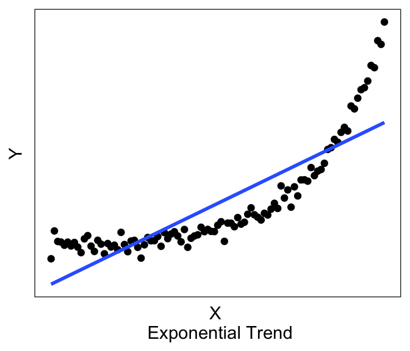
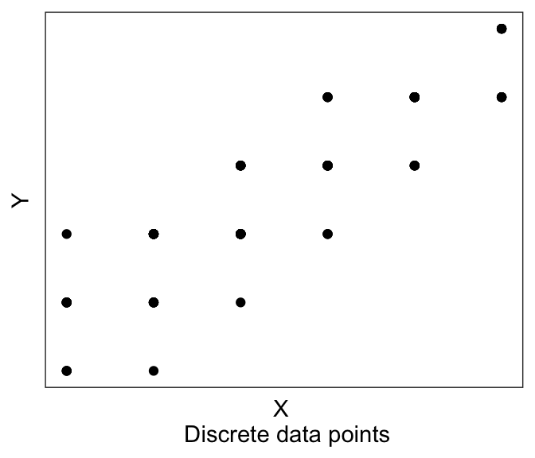

5.2 Running a regression
BT1101
The first step to running a regression is to be clear about what is your dependent variable of interest, and what are your independent variables. Often, this is clear from the context: As a researcher we have an objective to model or predict a certain variable — that will be the dependent variable, \(Y\). And we have variables that we think would predict that, and those will be our \(X\)’s. (Later we’ll discuss the differences between predictors, covariates, and confounders, which could all statistically affect the depenent variable.)
5.2.1 Structure your dataset
The second step is to structure your data.
For most Linear Regression (at least for the examples in this Chapter), we almost always want wide-form data, discussed in the earlier Chapter on data handling, where you have each row of the data frame be one observation, and you have one column for \(Y\) and one column for \(X\). (In later Chapters we shall see when we may need long-form data for other types of regression.)
For example, the mtcars dataset that comes with R is an example of wide-form data. Each row is one observation (i.e., one car), and each column is an attribute/variable associated with that observation (e.g., fuel economy, number of cylinders, horsepower, etc).
## mpg cyl disp hp drat wt qsec vs am gear carb
## Mazda RX4 21.0 6 160 110 3.90 2.620 16.46 0 1 4 4
## Mazda RX4 Wag 21.0 6 160 110 3.90 2.875 17.02 0 1 4 4
## Datsun 710 22.8 4 108 93 3.85 2.320 18.61 1 1 4 15.2.2 Visualize
The third step is to visualize your data, discussed also in the earlier Chapter on Data Visualization. For regression analyses, visualization of your data allows you to see whether there may be linear trends or non-linear trends (or no trends).

Linear models assume that there exists a linear trend between \(Y\) and \(X\). If you have a non-linear trend, like the quadratic and exponential ones shown here, you may want to think about transforming some of your variables to see if you can get a linear trend before running the linear model. If you visually no trend, like the last plot above, you can confirm this lack of trend just by running a linear model.


Plotting can also help with troubleshooting. For example, you’ll be able to immediately see if you accidentally have a factor instead of a numeric variable, or if you have possible outliers (like the graph on the left) or possibly missing data (like the graph on the right).
Let’s plot the two variables in our toy dataset df1:
Looks very linear! So we should expect to see a strong linear relationship between df$X and df$Y.
Additional plotting tips
If you are using ggplot() to plot your data, you can ask it to plot the best fit linear line using geom_smooth(method="lm", se=FALSE).
(If you don’t specify the method, it defaults to a non-linear smoothing, e.g. LOESS smoothing using stats::loess() for N<1000 observations. “se=FALSE” will remove the standard error ribbon – try setting it to true to see what it gives you).
For example, if I wanted to plot the best-fitting linear line to the graph above with the exponential trend, I can use the following chunk of code, which produces:
ggplot(df0, aes(x=x, y=y_exp)) + geom_point() +
geom_smooth(method="lm", se=FALSE) +
xlab("X \n Exponential Trend") + ylab("Y") + theme_bw() +
theme(panel.grid = element_blank(),
panel.background = element_blank(),
axis.ticks = element_blank(),
axis.text = element_blank())
Now you can see above that the line does have a significant slope (and indeed if you actually run the linear model using the code in the next section, you’ll see that there is a significant linear relationship). However, the linear line is not really the best description of the data, is it? This is why it is helpful to always plot our variables, so that we can see if we’re trying to fit a linear line to data that is better described by a non-linear relationship.
Consider this other case, where we now have discrete X variables.

It might be hard to see any linear trend. And in fact a lot of the data are overlapping, so it’s hard to see where the data are! This is where we have two more plotting tricks up our sleeve.
First, is to jitter each point. Jittering means slightly shifting each datapoint a little to the left/right (jitter in the “width” direction), or up and down (“height”). This is mainly for visualization, we are not actually changing our data values. We do this giving the option position=position_jitter(width= XXX , height= YYY) to geom_point(), where XXX is how much is our maximum jitter on the horizontal/x direction, and YYY is how much we want to jitter on the vertical/y axis. If say we have an integer valued variable (“How happy are you” on a scale from 1-5), then I recommend a jitter of about 0.1 to 0.2. This is big enough to be seen, but small enough to not be confusing.
Second tip, is to make your points slightly transparent, using the alpha = ZZZ option in geom_point(). This will help you see dense clusters of points vs. non-dense clusters.
And of course, we can use geom_smooth(). So here we have:
ggplot(df0, aes(x=x_discrete, y=y_discrete)) +
geom_point(position=position_jitter(width=0.2, height= 0.2), alpha=0.3) +
geom_smooth(method="lm", se=FALSE) +
xlab("X \n Discrete points, with jitter, alpha, and best-fit") + ylab("Y") +
theme_bw() +
theme(panel.grid = element_blank(),
panel.background = element_blank(),
axis.ticks = element_blank(),
axis.text = element_blank())And it’s much easier to see the trend!
5.2.3 Running the linear model
Finally, we’re ready to run the model. And in fact, it’s one line of code. lm for linear model, and then you provide an “equation”, y~x, which is R syntax for “Y depends upon X”. The final argument is the dataframe in which the data is stored.
TIP! Best analysis practice: If you store all your Y and X variables in your dataframe as wide form data, you can just write
lm(y~x, df1), which is very neat syntax.
It’s not as clean to writelm(df1$y~df1$x), and I discourage this.
After fitting the model, we can just call summary() on our lm object, in order to view the output of the model.
##
## Call:
## lm(formula = Y ~ X, data = df1)
##
## Residuals:
## Min 1Q Median 3Q Max
## -1.0781 -0.5736 0.1260 0.3071 1.5452
##
## Coefficients:
## Estimate Std. Error t value Pr(>|t|)
## (Intercept) -2.26117 0.46171 -4.897 0.000851 ***
## X 2.10376 0.07804 26.956 6.44e-10 ***
## ---
## Signif. codes: 0 '***' 0.001 '**' 0.01 '*' 0.05 '.' 0.1 ' ' 1
##
## Residual standard error: 0.8185 on 9 degrees of freedom
## (1 observation deleted due to missingness)
## Multiple R-squared: 0.9878, Adjusted R-squared: 0.9864
## F-statistic: 726.6 on 1 and 9 DF, p-value: 6.442e-10There’s a lot of information here, which we will break down in the next few sections, after a short digression to discuss how (Ordinary Least Squares) regression is solved.